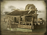

Enables
- Buildings: 
Basic Building Statistics (can be modified by difficulty level, arts, skills, traits and retainers)
- Cost: 800
- -5% to the cost of constructing buildings in this province
- +100 to wealth generated by trade in this province
- +1 per turn to town growth from trade within this province
Description
What will the artisan discover within the clay?
There are extensive and easily accessible deposits of clay in this province. This can be fired to produce pottery and tiles. Money spent here will improve production and so help with building construction. Craftsmanship of all kinds has always been admired in Japan. Even simple objects were considered worthy of being made with care, and being beautiful. This applied to household items as much as rich silks and valuable swords. The coming of the industrial world meant that these ideas were in danger of being swept away, but there is an echo of the idea that things worth doing or making are worth doing well in "kaizen", or the concept of continuous improvement. Anything and everything is reviewed and changed to make it better by everyone, even on a factory floor or a production line. Craftsmanship is still treasured: even today "living national treasures", the absolute masters of their arts and crafts, are celebrated and supported by the government and people.